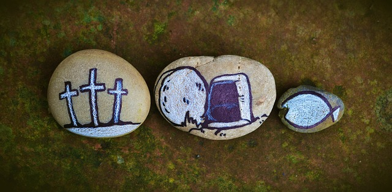
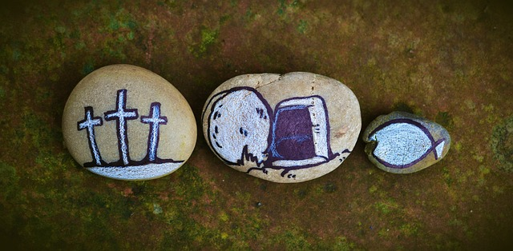
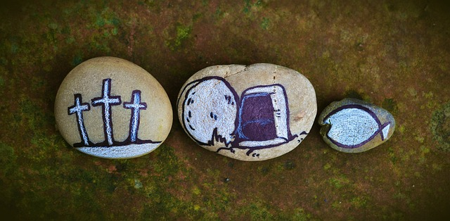

Ele morreu por nós
 



A Páscoa Cristã é uma das celebrações mais importantes do calendário religioso cristão. Ela é comemorada em todo o mundo pelos cristãos para celebrar a ressurreição de Jesus Cristo, que ocorreu três dias após a sua crucificação, de acordo com o relato bíblico.
A celebração da Páscoa começa com a Quaresma, um período de 40 dias de reflexão, arrependimento e oração, que começa na Quarta-feira de Cinzas e termina na Sexta-feira Santa. Durante a Quaresma, os cristãos são encorajados a fazer sacrifícios, como jejuar ou dar esmolas, para se aproximar de Deus.
A Semana Santa começa com o Domingo de Ramos, quando os cristãos relembram a entrada triunfal de Jesus em Jerusalém, onde foi recebido com palmas pelos habitantes da cidade. Durante a semana, os cristãos participam de diversas cerimônias e celebrações, como a Missa do Crisma, a Via Sacra e a Cerimônia da Vigília Pascal.
A Sexta-feira Santa é um dia de luto para os cristãos, quando se recordam da morte de Jesus na cruz. É um dia de reflexão e meditação, em que se fazem orações e se lembram dos sacrifícios que Jesus fez por toda a humanidade.
A Páscoa é celebrada no domingo seguinte à Sexta-feira Santa, e é um dia de grande alegria e festa para os cristãos. É um dia em que se celebra a vitória de Jesus sobre a morte e a ressurreição, que representa a promessa da vida eterna para todos os que creem em Deus.
Durante a celebração da Páscoa, os cristãos participam de diversas tradições, como a missa solene, a troca de ovos de Páscoa e a partilha de refeições em família. Essas tradições variam de acordo com a região e o país em que são celebradas, mas todas têm em comum a mensagem de amor, esperança e renovação que a Páscoa representa.
Em resumo, a Páscoa Cristã é uma celebração muito importante para os cristãos, que representa a vitória de Jesus sobre a morte e a promessa da vida eterna. É um momento de reflexão, arrependimento e oração, mas também de alegria, festa e confraternização em família e comunidade.
